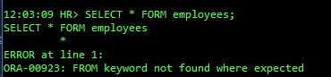
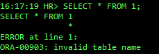
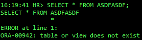
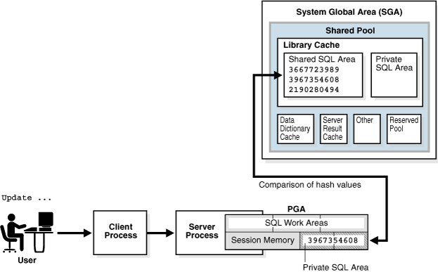
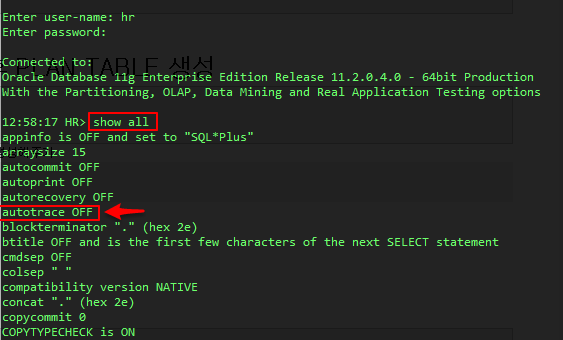
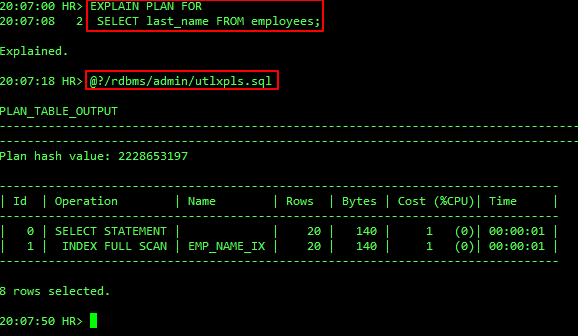
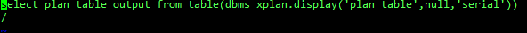
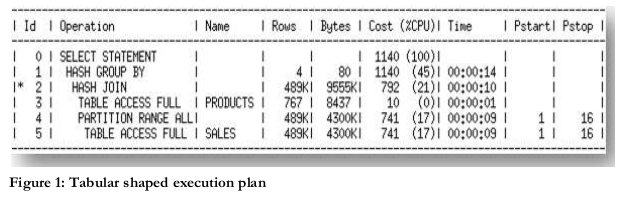
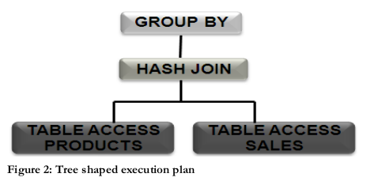

Query Optimizer
Created by Jongwon
SQL Processing

SQL Parsing
구문분석이라고 하며
다른 루틴을 처리할 수 있는 자료구조로
SQL을 부분으로 분리하는 것을 포함한다.
- Syntax Check
- Semantic Check
- Shared Pool Check
Syntax Check
다음 오류는 Syntax Check를 실패한 화면입니다.
SQL 문장 자체에서 구문을 나눌 수 있는지 체크합니다.
위 오류는 예상한 위치에 키워드를 찾을 수 없어서 발생한 것입니다.
Semantic Check
다음 오류는 Semantic Check를 실패한 화면입니다.
각 나누어진 구문에서의 의미를 체크합니다.
위 오류는 테이블 이름의 의미가 잘못되어(왼쪽),
테이블을 찾을 수 없어(오른쪽) 발생한 오류입니다.
Shared Pool Check
 SQL ID를 사용하여 메모리 주소를 확인하거나Execution Plan의 해시값을 확인하여
리소스를 많이 사용하는 단계를 건너 뛸 수 있습니다.
Execution Plan
 Parsed 된 쿼리를 Execution Plan으로 출력하는 과정은 위와 같습니다.
Parsed 된 쿼리를 Execution Plan으로 출력하는 과정은 위와 같습니다.
Execution Plan 이란?
SQL문을 실행하기 위해 필요한
구체적인 과정을 보여주는 것
autotrace 켜기
오라클 설치시 기본적으로 설치 되어 있지만 Disable되어있다. explain for 구문을 이용
ed를 눌러 edit화면으로 들어가면

Execution plan 순서
 위의 표 형식의 Execution plan은 아래와 같이트리구조로 해석할 수 있습니다.

A - C - E - D - B - H - I - G - F

따라서 앞의 표에서 Execution plan의 순서를 ID순으로 나열하면
3 - 5 - 4 - 2 - 1 - 0
Cost란?
Query에 의해 사용된 IO, CPU, 네트워크 리소스를 점유한 정도를 가지고
Oracle Optimizer가 정한 리소스 사용 기준으로,
리소스가 가장 적다고 산정되는 Execution plan을 선택합니다.
Optimizer가 Execution plan을 결정하는 요소
| Component | Description |
|---|---|
| Cardinality | 각 Operation을 수행 시 반환되는 행의 수 |
| Access method | 데이터가 각 테이블 또는 인덱스에 접근하는 방법 |
| Join method | 테이블을 조인 시 사용되는 메소드(e.g., hash, sort-merge, etc.) |
| Join type | 조인의 유형 (e.g., outer, anti, semi, etc.) |
| Join order | 각 테이블이 조인되는 순서 |
| Partition pruning |
테이블이나 인덱스가 더 작은 조각으로 쪼개질 수 있는가 (Pstart Pstop 항목) |
| Parallel Execution | 각 Operation이 병렬적으로 실행되었는가 |
Statistics
Data Dictionary에 저장된 데이터의 모임
USER_TAB_STATISTICS에 접근하여 볼 수 있다.
Statistics
| Statistic Name | Description |
|---|---|
| recursive calls | 유저와 시스템 레벨에서 모두 생성된 재귀 호출 수. |
| db block gets | 현재 블록이 요청된 횟수 |
| consistent gets | 요청된 블록을 일관적으로 읽은 횟수 |
| physical reads | 디스크로부터 읽은 총 데이터 블록 수 |
| redo size | 바이트로 생성된 리두의 총량 |
| bytes sent via SQL*Net to client | 포그라운드 프로세스에서 클라이언트로 전송된 총 바이트 수 |
| bytes received via SQL*Net from client | Oracle Net을 통해 클라이언트로부터 받은 총 바이트 수 |
| SQL*Net roundtrips to/from client | 클라이언트로부터 주고 받은 Oracle Net의 모든 메시지들의 수 |
| sorts (memory) | 어떠한 디스크 쓰기도 처리하지 않아 완전히 메모리에서만 처리한 sort operation의 수 |
| sorts (disk) | 한번이라도 디스크 쓰기를 요구한 sort operation의 수 |
| rows processed | 작업 중에 처리 된 행의 수 |